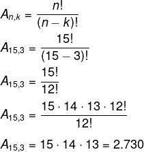
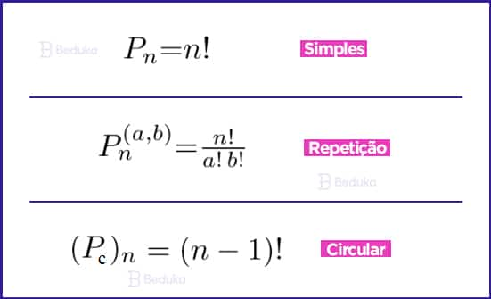
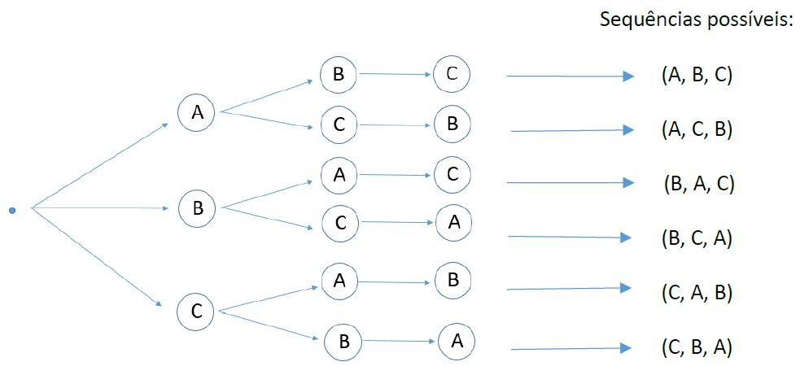

Conteúdos de Análise Combinatória
Formula da fatorial
Fatorial
O fatorial de um número natural n, denotado por n!, é o produto de todos os números naturais de 1 até n.
Matematicamente, podemos definir o fatorial da seguinte forma:
n! = n × (n - 1) × (n - 2) × ... × 2 × 1, com a convenção de que 0! = 1.
Exemplo prático: 5! = 5 × 4 × 3 × 2 × 1 = 120.
Formula da combinação simples

Combinação Simples
Em uma combinação simples, selecionamos elementos de um conjunto sem levar em conta a ordem.
A fórmula da combinação é:
C(n, p) = n! / [p!(n - p)!]
Onde:
- n é o número total de elementos disponíveis.
- p é o número de elementos escolhidos.
Exemplo: Se temos 5 pessoas e queremos formar um grupo de 3, usamos:
C(5,3) = 5! / [3!(5 - 3)!] = 10 combinações possíveis.
Formula do arranjo simples
Arranjo Simples
O arranjo simples considera a ordem dos elementos na formação dos agrupamentos.
Sua fórmula é:
A(n, p) = n! / (n - p)!
Onde:
- n é o número total de elementos disponíveis.
- p é o número de elementos escolhidos.
Exemplo: Escolher um presidente e um vice de um grupo de 5 pessoas:
A(5,2) = 5! / (5 - 2)! = 20 formas diferentes.
Formula da permutação
Permutação
A permutação ocorre quando utilizamos todos os elementos disponíveis e a ordem importa.
A fórmula geral é:
P(n) = n!
Se tivermos repetições, usamos a fórmula:
P(n) = n! / (n1! × n2! × ... × nk!)
Onde n1, n2, ..., nk são os números de repetições dos elementos.
Exemplo: Organizar as letras da palavra "MAMA":
P(4) = 4! / 2! = 12 formas.
Formula do princípio fundamental da contagem
Princípio Fundamental da Contagem
Se um evento pode ocorrer de m maneiras e outro evento de n maneiras, o número total de formas de ocorrência conjunta é dado por m × n.
Exemplo prático: Se temos 3 modelos de camisa e 2 tipos de calça, as combinações possíveis são:
3 × 2 = 6 combinações.